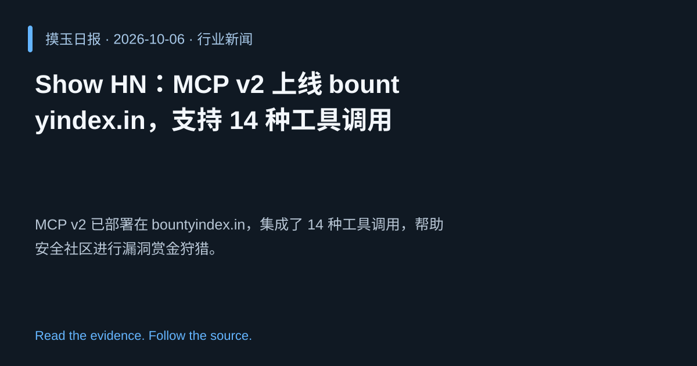

2026-10-06 · Asia/Shanghai · 行业新闻 · #7
Show HN：MCP v2 上线 bountyindex.in，支持 14 种工具调用
Show HN: MCP v2 on bountyindex.in, 14 tool calls,happy bug hunting
MCP v2 已部署在 bountyindex.in，集成了 14 种工具调用，帮助安全社区进行漏洞赏金狩猎。
为什么值得关注
展示 AI 辅助安全工具的实际落地，提升漏洞发现效率。
- 多工具调用实现自动化漏洞定位。
- 平台化奖励机制鼓励社区参与。
- 提升安全团队的响应速度和覆盖面。

热度 15.7 / 100；排名与评分保留该期记录。